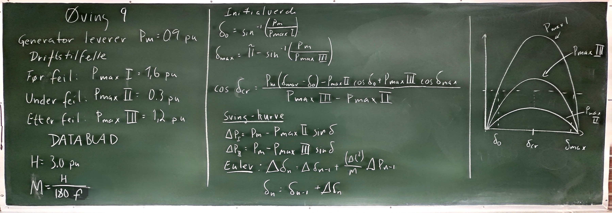
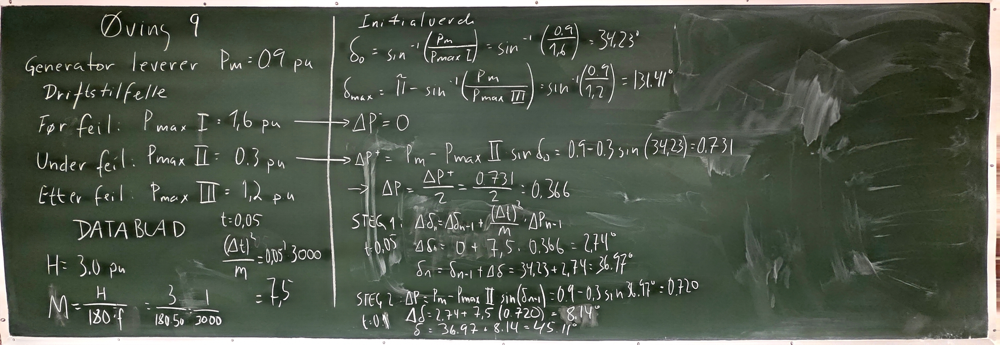

Løsningsforslag – Øving 9#
Gitte verdier:

1. Likearealkriteriet#
Startvinkelen før feilen er
Den maksimale rotorvinkelen etter feilutkobling er
Vinkeldifferansen i telleren må settes inn i radianer:
Lik-arealkriteriet gir
Dermed blir den kritiske utkoblingsvinkelen


Modifisert Eulers leapfrog metode#
Data:
Steg 0 (\(t=0{,}00\) s)#
Ved oppstart brukes middelverdien mellom null og den første akselererende effekten:
Steg 1 (\(t=0{,}05\) s)#
Steg 2 (\(t=0{,}10\) s)#
Steg 3 (\(t=0{,}15\) s)#
Oppsummering#
Den kritiske utkoblingsvinkelen er
Den ligger mellom \(\delta_2\) og \(\delta_3\). Lineær interpolasjon gir
Utkoblingstiden \(t_c=0{,}15\) s er litt større enn det interpolerte estimatet \(t_{\mathrm{cr}}\approx0{,}146\) s.
Tabell#
Før utkobling brukes \(P_{\max}=P_{\max II}=0{,}3\) p.u. Etter utkobling brukes \(P_{\max}=P_{\max III}=1{,}2\) p.u.
Steg n |
Tid t_n [s] |
Tilstand |
\Delta P_{n-1} [p.u.] |
\Delta(\Delta\delta)_n |
\Delta\delta_n} [°] |
\delta_n [°] |
|---|---|---|---|---|---|---|
0 |
0,00 |
Før feil |
— |
— |
0,00 |
34,23 |
1 |
0,05 |
Under feil |
0,7313 |
5,48 |
5,48 |
39,71 |
2 |
0,10 |
Under feil |
0,7083 |
5,31 |
10,80 |
50,51 |
3 |
0,15 |
Under feil |
0,6685 |
5,01 |
15,81 |
66,32 |
4 |
0,20 |
Etter feil |
\({-0,1990}\) |
\({-1,49}\) |
14,32 |
80,64 |
5 |
0,25 |
Etter feil |
\({-0,2840}\) |
\({-2,13}\) |
12,19 |
92,83 |
6 |
0,30 |
Etter feil |
\({-0,2985}\) |
\({-2,24}\) |
9,95 |
102,78 |
7 |
0,35 |
Etter feil |
\({-0,2703}\) |
\({-2,03}\) |
7,92 |
110,70 |
8 |
0,40 |
Etter feil |
\({-0,2224}\) |
\({-1,67}\) |
6,25 |
116,95 |
9 |
0,45 |
Etter feil |
\({-0,1701}\) |
\({-1,28}\) |
4,98 |
121,93 |
10 |
0,50 |
Etter feil |
\({-0,1182}\) |
\({-0,89}\) |
4,09 |
126,02 |
11 |
0,55 |
Etter feil |
\({-0,0707}\) |
\({-0,53}\) |
3,56 |
129,58 |
12 |
0,60 |
Etter feil |
\({-0,0250}\) |
\({-0,19}\) |
3,37 |
132,95 |
Ved utkoblingstidspunktet \(t_c=0{,}15\) s er rotorvinkelen omtrent
Siden
er feilen koblet ut for sent til at systemet er transient stabilt etter denne beregningen. Etter feilutkobling fortsetter rotorvinkelen å øke og passerer \(\delta_{\max}\approx131{,}41^\circ\).
En lineær interpolasjon mellom \(t=0{,}10\) s og \(t=0{,}15\) s gir et estimat for kritisk utkoblingstid:
Dermed er den oppgitte utkoblingstiden \(0{,}15\) s større enn estimert kritisk utkoblingstid.
---------------------------------------------------------------------------
NameError Traceback (most recent call last)
Cell In[1], line 16
14 # Svingeligning for rotorvinkel i grader
15 M = H / (180 * f)
---> 16 delta0 = np.degrees(np.arcsin(Pm / Pmax_I))
18 dt = 0.001
19 t_end = 1.2
NameError: name 'Pmax_I' is not defined